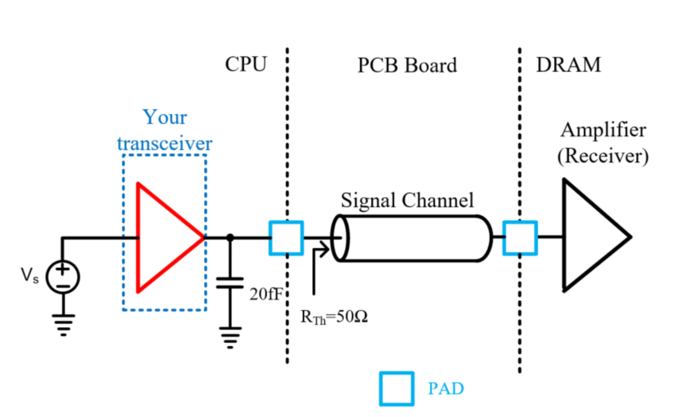
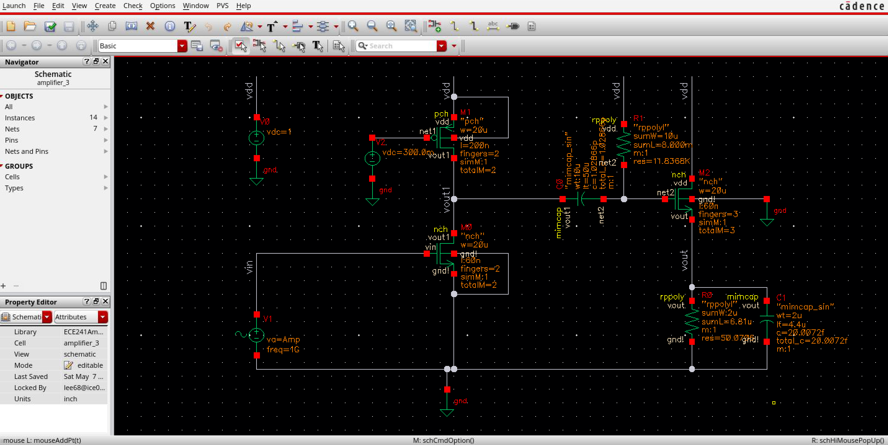

The Transceiver
A transceiver is a signal transmitter and receiver package. In Electronics I, I designed the amplifier for this transceiver and simulated on Cadence virtuoso.
The target of this transceiver was to provide a 12dB voltage gain at 1GHz for a low-impedance load, at a power consumption of 8mW. I achieved these specifications using a two-stage structure. The first stage is a cascode amplifier that uses a current source to increase the voltage gain. In the second stage, a source-follower structure is used to increase the output impedance of the first stage even with the low load impedance; then, the voltage gain from the first stage is maintained relatively well through the second stage.
Through this project, I learned how to use Cadence Virtuoso to run circuit simulations. The platform provides tools that match real-life circuit behavior better than tools such as LTspice. It was challenging to balance the internal (W/L), finger layouts of the transistors - together with external components - to achieve desired specifications. I learned the importance of prioritizing component specifications based on the use case.
